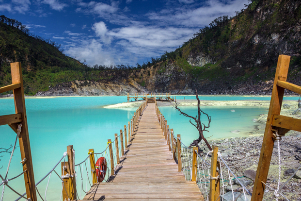
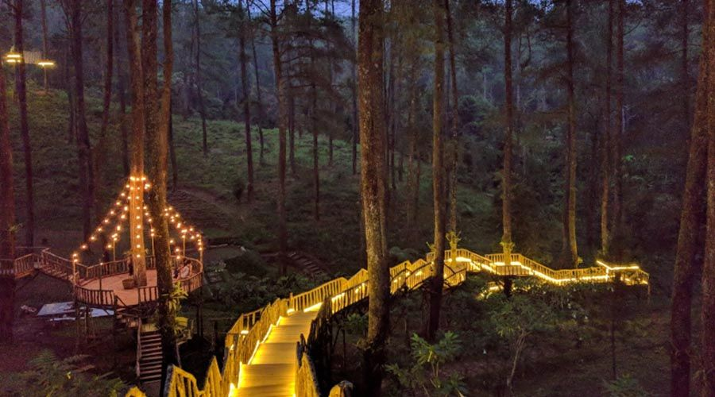
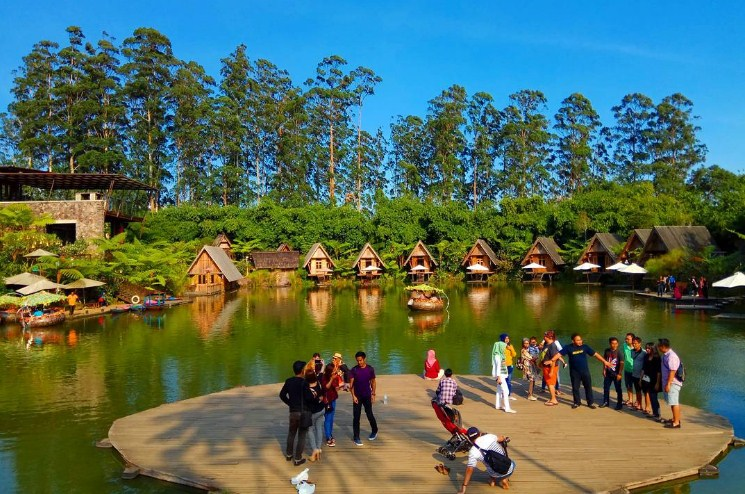
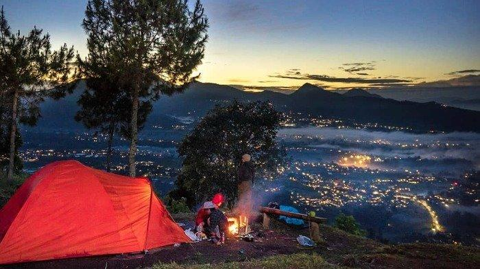
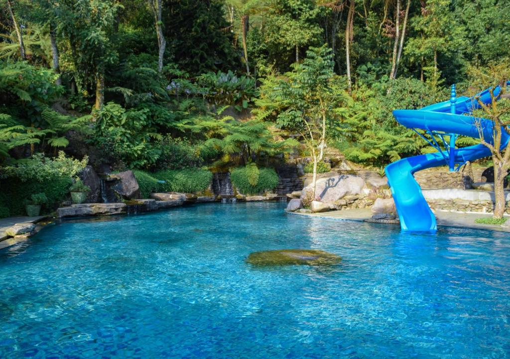
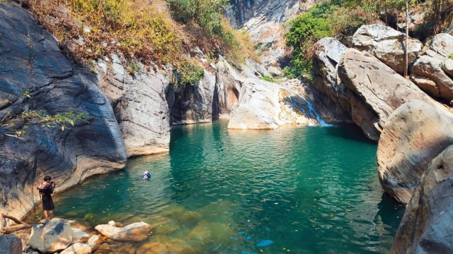

Kawah Putih Ciwidey
Kawah Putih adalah sebuah danau kawah vulkanik yang terletak di Ciwidey, Bandung Selatan. Terkenal dengan air danau berwarna putih kehijauan dan lanskapnya yang unik, Kawah Putih menjadi salah satu destinasi wisata alam yang paling populer di Bandung. Keindahan alam yang eksotis ini menawarkan pemandangan menakjubkan dan pengalaman yang tak terlupakan bagi pengunjungnya.
Pengunjung dapat menikmati pemandangan danau kawah yang spektakuler, berjalan-jalan di sekitar kawah, dan mengambil foto-foto menakjubkan. Suasana sejuk dan berkabut di sekitar kawah menambah kesan mistis dan mempesona dari tempat ini.
Lokasi: Ciwidey, Kabupaten Bandung, Jawa Barat
Aktivitas: Berfoto, menikmati pemandangan, trekking ringan
Waktu Terbaik untuk Berkunjung: Pagi hari (untuk menghindari kabut tebal)
Tiket Masuk: Rp 50.000 per orang (harga dapat berubah)
Orchid Forest Cikole
Orchid Forest Cikole adalah taman wisata yang memadukan keindahan alam hutan pinus dengan pesona anggrek. Terletak di kawasan Cikole, Lembang, taman ini menawarkan pengalaman unik dengan berbagai atraksi dan aktivitas yang menarik.
Pengunjung dapat menikmati keindahan ribuan anggrek, berjalan di atas jembatan gantung, mencoba berbagai wahana permainan, dan menikmati suasana sejuk khas pegunungan. Taman ini juga dilengkapi dengan café dan restoran yang menawarkan pemandangan indah.
Lokasi: Cikole, Lembang, Kabupaten Bandung Barat, Jawa Barat
Aktivitas: Melihat anggrek, trekking, fotografi, wahana permainan
Waktu Terbaik untuk Berkunjung: Pagi hingga sore hari
Jam Operasional: Setiap hari, 09.00 - 18.00 WIB
Tiket Masuk: Rp 50.000 - Rp 75.000 per orang (harga dapat berubah tergantung paket)
Dusun Bambu Lembang
Dusun Bambu adalah destinasi ekowisata yang terletak di Lembang, Bandung Barat. Tempat ini menawarkan pengalaman unik dengan konsep yang memadukan alam, budaya, dan kuliner dalam satu kawasan yang indah.
Pengunjung dapat menikmati berbagai aktivitas seperti berjalan-jalan di taman, menikmati pemandangan Gunung Burangrang, mencoba wahana permainan, dan bersantap di restoran-restoran unik dengan konsep rumah pohon atau di tepi danau. Dusun Bambu juga menyediakan akomodasi berupa villa untuk pengalaman menginap yang tak terlupakan.
Lokasi: Jl. Kolonel Masturi KM. 11, Cisarua, Kabupaten Bandung Barat, Jawa Barat
Aktivitas: Wisata kuliner, outbound, memancing, bersepeda, piknik
Waktu Terbaik untuk Berkunjung: Pagi hingga sore hari, terutama saat cuaca cerah
Jam Operasional: Setiap hari, 09.00 - 20.00 WIB
Tiket Masuk: Rp 20.000 - Rp 30.000 per orang (harga dapat berubah pada hari libur atau weekend)
Gunung Putri Lembang
Gunung Putri adalah salah satu destinasi wisata alam yang menarik di Lembang, Bandung. Terkenal dengan pemandangan matahari terbit yang menakjubkan, Gunung Putri menjadi tujuan favorit para pendaki dan pecinta alam.
Pengunjung dapat menikmati trek pendakian yang relatif mudah, cocok untuk pemula. Dari puncak, Anda bisa menyaksikan panorama indah Kota Bandung dan gunung-gunung di sekitarnya. Selain pendakian, area ini juga populer untuk camping dan fotografi landscape.
Gunung Putri memiliki ketinggian sekitar 1.587 meter di atas permukaan laut. Perjalanan ke puncak biasanya memakan waktu sekitar 1-2 jam, tergantung pada kecepatan pendaki. Di sepanjang jalur pendakian, Anda akan melewati hutan pinus yang rindang dan udara segar khas pegunungan.
Lokasi: Jayagiri, Lembang, Kabupaten Bandung Barat, Jawa Barat
Aktivitas: Pendakian, camping, fotografi, menikmati sunrise
Fasilitas: Penginapan, toko, restoran, toilet, dan kamar mandi
Tiket Masuk: Rp 10.000 - Rp 15.000 per orang (harga dapat berubah)
Taman Wisata Bougenville
Taman Wisata Bougenville adalah sebuah destinasi wisata yang terletak di Kota Bandung, menawarkan keindahan alam dan berbagai fasilitas rekreasi. Taman ini terkenal dengan koleksi bunga bougenville yang berwarna-warni, menciptakan pemandangan yang menakjubkan dan menjadi latar belakang yang sempurna untuk berfoto.
Pengunjung dapat menikmati berbagai aktivitas seperti berjalan-jalan di taman, piknik, atau bersantai di area yang teduh. Taman ini juga dilengkapi dengan berbagai fasilitas seperti area bermain anak, jogging track, dan tempat duduk yang nyaman.
Lokasi: Jl. Cibunut Utara, Kebon Pisang, Kec. Sumur Bandung, Kota Bandung, Jawa Barat
Aktivitas: Berfoto, piknik, jogging, bermain di area anak
Waktu Terbaik untuk Berkunjung: Pagi hingga sore hari, terutama saat musim bunga mekar
Jam Operasional: Setiap hari, 06.00 - 18.00 WIB
Tiket Masuk: Gratis (dapat berubah sewaktu-waktu)
Sanghyang Heuleut
Sanghyang Heuleut adalah sebuah destinasi wisata alam yang tersembunyi di Bandung Barat. Terkenal dengan keindahan alamnya yang masih alami, tempat ini menawarkan pengalaman yang unik dan menyegarkan bagi para pengunjungnya.
Daya tarik utama Sanghyang Heuleut adalah sungai dengan air yang jernih dan bebatuan besar yang membentuk kolam alami. Pengunjung dapat berenang, bermain air, atau sekadar bersantai menikmati keindahan alam sekitar. Area ini juga populer untuk camping dan fotografi alam.
Lokasi: Kecamatan Cipatat, Kabupaten Bandung Barat, Jawa Barat
Aktivitas: Berenang, camping, hiking, fotografi
Waktu Terbaik untuk Berkunjung: Pagi hingga sore hari, hindari musim hujan
Tiket Masuk: Rp 10.000 - Rp 15.000 per orang (harga dapat berubah)
Catatan: Akses menuju lokasi cukup menantang dan membutuhkan trekking ringan. Pastikan untuk membawa perlengkapan yang sesuai dan menjaga kebersihan lingkungan.